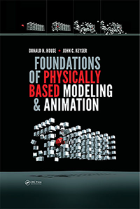

Dr. Donald House is Professor Emeritus at both Texas A&M University, and Clemson University. He recently returned to part time service at Texas A&M to assist with curriculum development in their BS in Visualization program, and to spearhead development of a proposed new PhD program in Visual Computing and Interactive Media. At Clemson, he was founding Chair of the Division of Visual Computing in the School of Computing, which houses Clemson's unique M.F.A. program in Digital Production Arts, and an undergraduate minor in Digital Production Arts. The Division also supports M.S. and Ph.D. specializations in Visual Computing. In Dr. House's previous positions at Texas A&M he played a key role in the development of their Visualization Program. Early in his academic career he was a founding member of Williams College's Computer Science Department.
In 2016, he and Dr. John Keyser published an introductory book Foundations of Physically Based Modeling and Animation. The supporting website for the book can be found at: House & Keyser, Book Website. The book is organized as a textbook, and can be used to support several levels of curriculum design from mid-level undergraduate to graduate. It is particularly aimed at the student or professional seeking an introduction to how Physics can be used to fashion a variety of animated phenomena, from particle systems to fluid dynamics. It is designed to serve as a solid introduction to the field preparing the reader to delve into more advanced material in the research literature.
Donald H. House